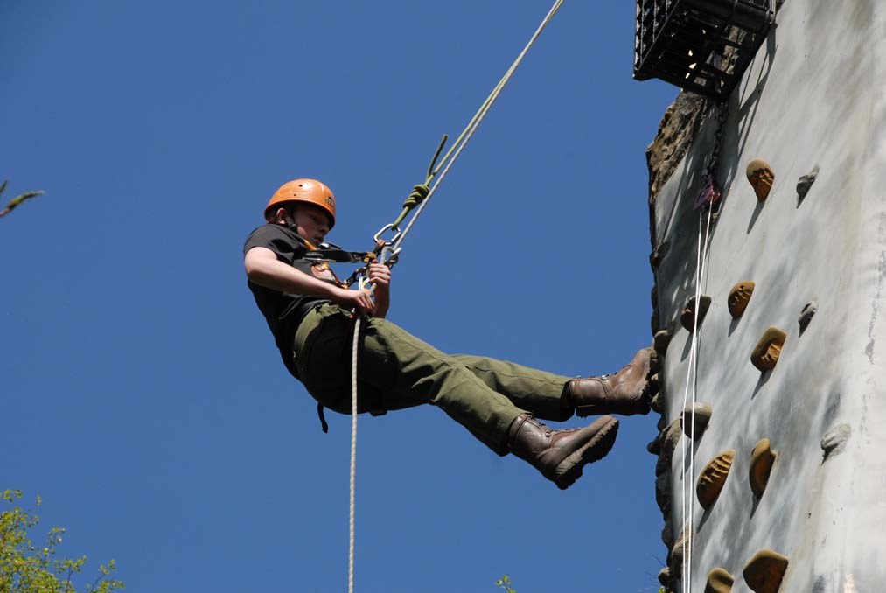
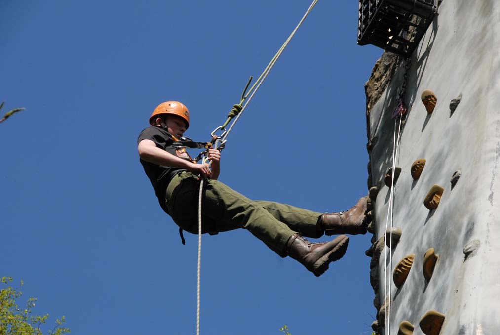

1ST OWLSMOOR SCOUT GROUP


 

Welcome to the 1st Owlsmoor Scout Group website. On this site we aim to give details of scouting activities and events within Owlsmoor, (near Sandhurst), Berkshire, UK.
Here you can find information on Beavers, Cubs and Scouts and details of how to join us.
Are you interested in volunteering with 1st Owlsmoor Scout Group? Please click here for more information.
27.06.2017
27.06.2017
27.06.2017
MORE....